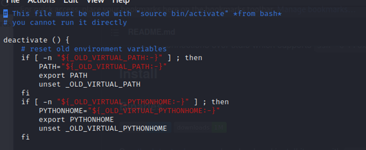

March 6, 2023
Agile
Tools Needed: Gobuster, LinPEAS, Burp Suite and Chisel.
Disclaimer: This method has since been patched
Step 1: Start off with an Nmap Scan
nmap -sV -sC <IP ADDRESS> -oA <FILE NAME>
We can see that this room redirects to superpass.htb, we can add that to our /etc/hosts and then navigate to the webpage
This will scan for any directories that come after the main website:
gobuster dir -u http://superpass.htb/ -w /usr/share/wordlists/dirbuster/directory-list-2.3-medium.txt
This one will scan for any vhosts:
gobuster vhost -u http://superpass.htb/ -w /usr/share/seclists/Discovery/DNS/subdomains- top1million-5000.txt –append-domain
No vhosts are found.
Go back to the website and register for an account
You will be redirected to an error page.
From the gobuster scan we can go to superpass.htb/download.
You can see here that certain functions get ran on this page if you add a ? followed by the commands.
So, we can attempt to call the function specified in download to try to get something from the web server.
Very Linux.
To test this download function, I tried a test.
We can see that it’s checking the /tmp directory for the file test.
So we can try doing some directory traversal to get a file we know exists on Linux systems.
And we have a few potential usernames here
Corum. Runner, Edwards, dev_admin
Next, we want to go read more about this application.
We can find the paths to many of the files in that initial error we found when registering for the website.
Next let's read the file we found in the download function.

We can find a directory for a vault with an ID.
Going to this URL gives us a blank page, but not an error like other places.
We can create a simple wordlist to attempt to go through these vaults (I manually typed numbers 1-20 to test)
Send this request to intruder
Clear the $$$
And add the position of the payload

Go to payloads, under payload options load a wordlist of numbers. And start your attack.
Look at the length of the responses to see which ones are unique
Or visit the page
And these are the SSH credentials
Next thing to do is sudo -l to see what this user can run as sudo.
Nothing, moving on to linPEAS
Now we can try linPEAS. Curling directly from the target does not work so we can get linPEAS on our host and then start a python server to download it that way.
Do not forget to chmod the file and then you can run it.
Let's forward this debugging port to ourselves so we can look if there’s any additional information on there.
To do this we’re going to use a tool named chisel.
https://github.com/jpillora/chisel
This will let us create a tunnel from the target to our machine and use this debugger.
We’re going to have to get this on our host machine and upload it to the Agile box.
Next step is to open a Chrome-based browser and go to chrome://inspect
We should have gotten a page by navigating to localhost:port
But we got nothing!
Let’s check the netstat of Agile to see if we can get any more information

Only 5555 seems to have given us any results from ps, so we can try that port
We get something back from Agile on our chisel server
So, let’s reconfigure our Chrome inspect to use 5555
And let’s go check out the website!
Trying to log in, but we get a different error this time
Second attempt
Going to try to register as a new user
I went to the spot where we found Corum’s credentials, but this time the page is blank, so I decided to retry the IDOR enumeration.
This time I did it manually because it was under ten.
We get booted to the login page, which was not the same functionality as before.
We continue through the vault rows and on 1 we get Edwards credentials
Now we can try to SSH into the machine as Edwards.
Run sudo -l to see what Edwards can run as sudo
Edwards can sudoedit the following two files:
/app/config_test.json
And /app/app-testing/tests/functional/creds.txt
We should check what version of sudoedit it is using.
Googling sudoedit and the version number will get us to CVE-2023-22809.
Here is a GitHub with an exploit to use:
https://github.com/n3m1dotsys/CVE-2023-22809-sudoedit-privesc/blob/main/exploit.sh
Looking for anything interesting in linPEAS
We can read these files but not write to them.
This script will execute source /app/venv/bin/activate
We can try writing to that file with the sudoedit CVE and attempt to get the root flag that way
This time when we try to sudoedit the /app/config_test.json, it was fine, it will open up the activate file instead
Let's do a test to see if we can read the root flag

Looks like the file saved when we quit.
If the comments in the script are correct we should soon source the activate file and it should execute our cat root/root.txt flag command.
So we can go to /tmp and wait for the file to show up
We can then read our file
Success! Agile has been pwned 😎